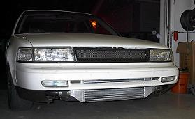

-
I know, But I was not really looking for advice. Just intresting to see the differences between us. My local friends build their engines(turbos and N/A) to rev as high as possible, and most of the people in US seems to like low rpm power.SATAN wrote: I'm researching and seeing if I can wrap it up to 8.5k rpm's. Built engine
Now we're talking!
Jason84NA2T wrote:
Your shift points will VERY MUCH depend on your engine/setup specifically, I don't think others can really give you advice unless they're experienced and looking right at your dyno graph or side-by-side ET's. A stock motor falls on its face about the same RPM that my 84 is hitting peak horsepower.
http://Jocke.z31turbo.com 11.842s car
http://www.youtube.com/watch?v=UfRwqC3jkAk
If Nissan motorsports is Nismo, wouldn't Honda Motorsports be Homo? -
I must shift at 5900 as my car still sputters at 6000. It USED to rev/pull to 6900 (I was told JWT ecu cuts fuel at 7000) but since I put my 3" cat back on, the car sputters at & above 6000 in every gear at any boost level. It's a beast from 2800 to 5900. I miss the other 1000 rpms. :cry: -
[quote]Az4u2c wrote:The L series is the same way. Jason drove my car once and said it was about as bad as any stock VG. I never shift after 5500. I'll probably just keep the rev limiter at the red line of around 6500.Originally posted by 84z31
I don't like to run it to high rpm when the drivetrain vibrates a lot and I start to wonder about the cracked rubber in my damper.
In my other car…the Zetec in my Focus makes 130 hp @ 5300, but revs to about 6700 rpm before the cutoff. :? They seemed to have tuned it for torque, not for top end power. Perhaps Nissan did the same thing with the L and VG?1976 280Z 2+2 Turbo
'81 L28ET, '84 Turbo ECCS, '84-'85 rotors + Toyota 4x4 front calipers + 240SX rears, Z31 DXD Stage I clutch kit, Evo intercooler, Tokico lowering springs and HP blues
"I drive an S30…your stock equipment is my future upgrade!" -
That's definately the case for the VG I think, because the RB has shit all torque but revs it's tits off… They're completely opposite engines in that respect so it only makes sense that the VG was built more for torque and not to rev to 10k or whatever. -
[quote]280Z Turbo wrote: [quote=Az4u2c]Of course thats what the stock USDM z31t was built for. Torque, thats why the whole set up comes with a redline of 6k and a tiny turbo that make full boost by like 3200 rpm or somthing like that.Originally posted by 84z31
If they wanted top end power it would have larger turbo and higher redline. But those crazy nissan engineers got this whack idea that Americans are all about 0-60 times or somthing like that.85 Z31 6.0 LSX turbo 766whp/792wtq
04 GTO, LS6, big cam, porting, N20… underway for summertime daily driver. -
[quote]SATAN wrote: [quote=280Z Turbo][quote=Az4u2c]Actually, I think I make 7 psi even sooner than that. :lol:Originally posted by 84z31
I could never understand why people said my boost comes in at "x rpm". I always thought boost was based on load.
It almost makes sense to tune the L and VG that way (they're bigger SOHC motors), but I don't know why Ford tuned a 2.0L DOHC 4 cylinder that way.1976 280Z 2+2 Turbo
'81 L28ET, '84 Turbo ECCS, '84-'85 rotors + Toyota 4x4 front calipers + 240SX rears, Z31 DXD Stage I clutch kit, Evo intercooler, Tokico lowering springs and HP blues
"I drive an S30…your stock equipment is my future upgrade!" -
Well it is based on load but generally people are refering to WOT so thats how the x rpm comes in.85 Z31 6.0 LSX turbo 766whp/792wtq
04 GTO, LS6, big cam, porting, N20… underway for summertime daily driver. -
I rev my Stock cams and stock head engine to 7 all the time.. and it loves it. peaks around 6700-6800.
12.88 @ 114 mph.. in a 91 maxima at 14 psi -
` -
now that i think about it, my car makes power after 6 k. Because It will pull all the way to fuel cut before i can catch a loss of power.
Back when it was NA, you would feel the power go and no when to shift
Terrible idea putting those wheels on… -
I must be a soft-cock as I haven't had mine above 5k
-
Yeah you are! haha You have an auto aswell, the gears are so much taller with the 4N71B. As a comparison 1st gear in a manual is good for about 1-2 seconds before you're shifting into 2nd but then 2nd pulls hard as anything after that… Due to the rarity of manual Z's here, my first Z had an automatic and once I finally found a factory manual Z besides the obvious with shifting, my driving technique changed completely… I dont think I could rev my 89 manual turbo as high though, although I haven't really given it a full test yet as it needs a few things done before it can be ran balls out. -
Hey bro, You don't need displacement for serious acceleration but you do for serious torque as you may know. It's kinda amazing that an engine engineered in the 80's was used until 2000+ in the Nissan trucks. They should have used larger cams from the factory but that's water under the bridge. The RB for comparison would suck ass in an Xterra without the turbos as that engine has no balls on the bottom end just like the Yota 2jZ but you could still do some serious wheeling with the right gearing to compensate for lack of torque form the engine.300zxt wrote: That's definately the case for the VG I think, because the RB has shit all torque but revs it's tits off… They're completely opposite engines in that respect so it only makes sense that the VG was built more for torque and not to rev to 10k or whatever.
Anyway, My Auto pathfinder will shift @ exactly 6K if you stab the pedal which is fine with me....it's a slow offroad beast compared to most real sportscars. My Z31 is a rolling chassis waiting SAS and everything else/
I've driven friends Z31's that felt dead @ 7K so shifting was generallly done @ 6500ish.
If my VG34ET powered 240SX is pulling hard to 7500 I'm gonna be a happy freaking man…we'll c.Ucked Fup!!! -
My NA pulls to fuel cut at 6500rpm. Euro cams 3-deg retarded, equal-length headers, gutted plenum but stock heads. The Pathfinder manifold I have sucks about 1k rpm off that but has a fatter torque curve. I need Nistune to get it to 7k +. Right now it really wakes up above 4k but the fun ends too soon. Nothing time and money wont fix…mostly money. -
some have talked about the heads and intake being the rpm bottleneck. what is safe for the factory bottom end? 7500-8000? what would it take to have a solid 7500rpm shift point?
boost. does a body good!

Copyright © 2006–. All rights reserved. Privacy Policy